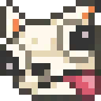

Ищи и качай прямо здесь
Тот же каталог, что и на Modrinth — моды, ресурспаки, шейдеры и датапаки — без перехода на другой сайт.

Miha1ychPackerТот же каталог, что и на Modrinth — моды, ресурспаки, шейдеры и датапаки — без перехода на другой сайт.